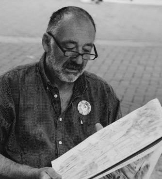

Peter divides his time between art and animation. Having spent many years making cartoons for children’s television (Ludwig, Pigeon Street, Vision On, Rosie and Jim, Tronji, Bonny Banana and Mo and DipDap), his visuals tend to be friendly, accessible and happy.
Expect wit, mixed with a sense of the absurd – a finely judged balance of humour and seriousness.
His work captures moments from narratives which have yet to (or may never) happen. He believes the sketched, handmade look makes his images come alive.
He says: "My long involvement with animation accounts for a lot in my art. Good animation doesn’t mimic or recreate movement. It cheats wherever it can by simplifying, exaggerating or caricaturing. The further it gets from reality whilst still retaining the essence of what it represents, the more exciting."
Peter likes to apply the same principle to painting, playing with visual and narrative styles and ideas and juggling with the concepts of fact and fiction – reality and abstraction. And cheating? Well, in his world playfulness is intrinsic to creativity. He hopes you will find his work entertaining.
Born in Prague, into a family heavily involved in the arts and media, he moved to England in 1968. He studied art, but his interest in motion and narrative led him to his other great passion, animation. He was professionally active in this field, producing literally hundreds of films for the BBC, ITV and Channel Four. In his animation career, he progressed from stop motion 2D cut– outs to directing 3D CGI animation on ‘Tronji’ for Ragdoll Productions.
(More about his animation: veryanimated.co.uk or cut-out.co.uk)
Throughout, he continued to paint, illustrated many books and comics and completed numerous commissions for large scale paintings. He also attended regular life drawing sessions.
In recent years he has had a number of one man and group shows in London and the home counties. Both his paintings and his animations are merging into a more personal artistic expression which he is in the process of resolving.
He lives and works in Reading with his family, cats and dogs, and imagination.